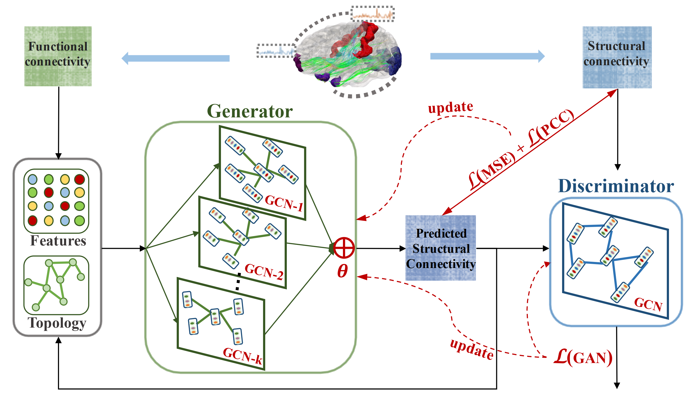

Publications
Brain Structure-Function
 |
Predicting brain structural network using
functional connectivity |
Deep Fusion of Brain Structure-Function
in Mild Cognitive Impairment |
|  | Recovering Brain Structural Connectivity
from Functional Connectivity via Multi-GCN based Generative Adversarial Network |
Jointly Analyzing Alzheimer's Disease Related
Structure-Function Using Deep Cross-Model Attention Network |
Brain Disease
Representing Alzheimer's Disease Progression
via Deep Prototype Tree |
Representative Functional Connectivity Learning for
Multiple Clinical groups in Alzheimer's Disease |
Free water in T2 FLAIR white matter hyperintensity lesions |
Learning Latent Structure Over Deep Fusion
Model of Mild Cognitive Impairment |
 |
Accessing Latent Connectome of Mild Cognitive
Impairment via Discriminant Structure Learning |
A Cascaded
Multi-Modality Analysis in Mild Cognitive Impairment |
Brain Disease Related Phenotype-Genotype
Classification of Mild Cognitive Impairment by Fusing
Neuroimaging and Gene Expression Data |
Brain Image Reconstruction
Multi-modal Image Prediction via Spatial Hybrid U-Net |